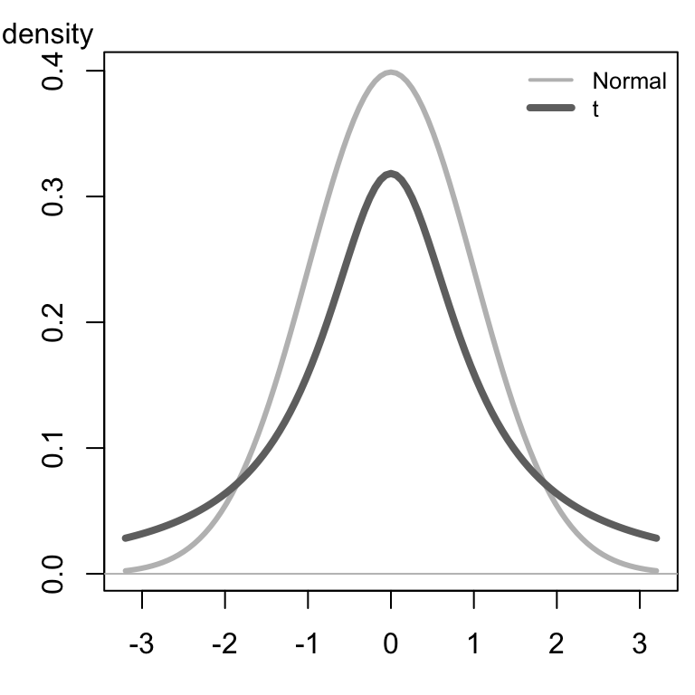
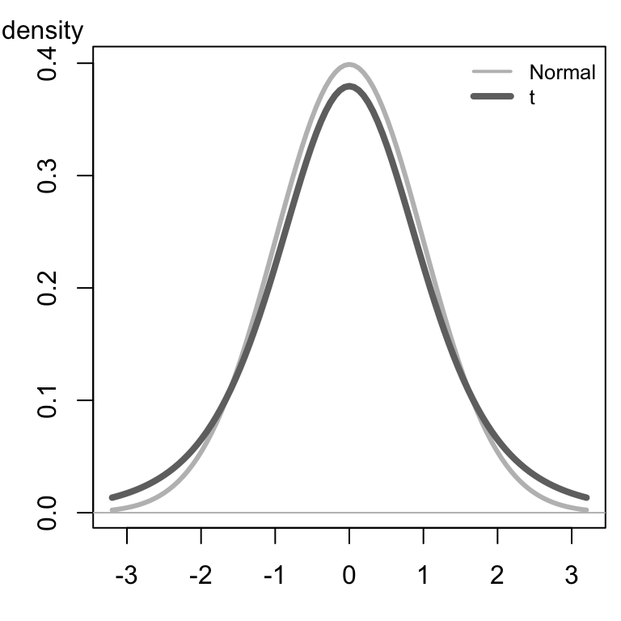
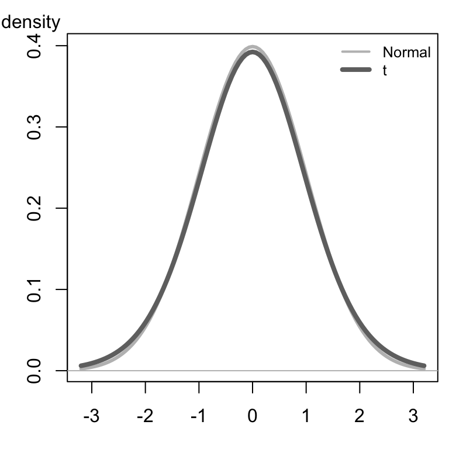
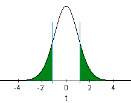

Lesson 11 Inference for One Mean (Sigma Unknown)
What If We Don’t Know \(\sigma\)?
In practice, we almost never know the population standard deviation, \(\sigma\). So, it is generally not appropriate to use the formula \[ z = \frac{ \bar x - \mu }{ \sigma / \sqrt{n} } \] In 1908, William Sealy Gosset published a solution to this problem. He found a way to appropriately compute the confidence interval for the mean when \(\sigma\) is not known. The basic idea is to use the sample standard deviation, \(s\), in the place of the true population standard deviation, \(\sigma\). If \(\sigma\) is not known, we cannot base the calculations on the standard normal distribution, and we cannot use the formula above to conduct hypothesis tests.
In a remarkable piece of work, Gosset found the appropriate distribution to use when \(\sigma\) is unknown. At the time of this discovery, Gosset worked for the Guinness brewery. To avoid problems with industrial espionage, Guinness prohibited employees from publishing any research results. Knowing his work provided a significant contribution to Statistics, Gosset convinced his employer to allow him to publish under a fictitious name. He chose the pseudonym “Student”. Gosset’s test statistic was denoted by the letter \(t\), this distribution has come to be known as Student’s t-distribution.
\[ t = \frac{ \bar x - \mu }{ s / \sqrt{n} } \]
The \(t\)-distribution is bell-shaped and symmetrical. The \(t\)-distribution has a mean of 0, but it has more area in the tails than the standard normal distribution. The exact shape of the \(t\)-distribution depends on a parameter called the degrees of freedom (abbreviated \(df\)). The degrees of freedom is related to the sample size. As the sample size goes up, the degrees of freedom increase accordingly. For the procedures discussed in this lesson, the degrees of freedom is one less than the sample size: \(df = n-1\).
Click here to explore how the shape of the \(t\)-distribution changes with the degrees of freedom. Notice that as the degrees of freedom increases, the shape of the \(t\)-distribution (dark curve) gets closer to the standard normal distribution (lighter curve). The lighter gray curve is identical (always normal) in the three images below, while the darker curve changes shape as the degrees of freedom increase.
|
\(t\)-distribution |
\(t\)-distribution |
\(t\)-distribution |
|---|---|---|
|
 |
 |
 |
Hypothesis Tests

Body Temperatures Revisited
We will apply the \(t\)-distribution to the body temperature data we explored previously.
This hypothesis test is conducted in a manner similar to a test for a single mean where \(\sigma\) is known, except that instead of using the population standard deviation, \(\sigma\), in the calculations, we estimate this value using the sample standard deviation, \(s\). This leads to a \(t\)-distribution, rather than a normal distribution for the test statistic. We will not need to compute the value of this test statistic by hand. It will be done using Software.

Summarize the relevant background information
We want to conduct a hypothesis test to determine if the mean body temperature is different from 98.6° Fahrenheit. Previously, we assumed that we knew the value of \(\sigma\). Actually, this value is not known.
State the null and alternative hypotheses and the level of significance
\[ \begin{array}{rl} H_0: \mu = 98.6\\ H_a: \mu \ne 98.6\\ \end{array} \]
\[ \alpha = 0.05 \]

Describe the data collection procedures
We will use the body temperature data, BodyTemp.xlsx, collected by Dr. Mackowiak and his colleagues to conduct the test.

Give the relevant summary statistics
\[ \begin{array}{l} \bar x = 98.23\\ s = 0.738\\ n = 148 \end{array} \]
Make an appropriate graph (e.g. a histogram) to illustrate the data


Verify the requirements have been met
- We assume that the individuals chosen to participate in the study represent a (simple) random sample from the population.
- \(\bar x\) will be normally distributed, because the sample size is large. (Note: We could have also noticed that the body temperature data appears to be normally distributed, so even with a small sample size, \(\bar x\) would be normal.)
Give the test statistic and its value
We will need to conduct the analysis using software, so we can report this value.
Instructions for conducting a test for one mean with \(\sigma\) unknown:
Here are the instructions for conducting the one sample t-test in Excel:
The Excel file needed for this analysis is Math 221 Statistics Toolbox. We will use this Excel file to conduct the hypothesis tests for a single mean with \(\sigma\) unknown.
- After opening the file, please click on the tab labeled “One-sample t-test”.
- Paste the data in the appropriate place in Column A.
- Set the null hypothesis value in cell M5. For this example, the value should be 98.6.
- Click in cell L6 and use the drop-down menu to set the alternative hypothesis to: “Not Equal To”
The image below shows the Excel file after these changes have been made.
Consider each of the following alternative hypotheses that could be used in a test for a single mean where the null hypothesis is \(H_0: \mu = 98.6\).
- \(H_a: \mu \ne 98.6\)
- Choose “Not Equal To” in the drop-down menu in cell L6.
- \(H_a: \mu < 98.6\)
- Choose “Less Than” in the drop-down menu in cell L6.
- \(H_a: \mu > 98.6\)
- Choose “Greater Than” in the drop-down menu in cell L6.
You will have opportunities to practice using each of these.
The interpretation of the results will follow the pattern established in the previous hypothesis tests. If the \(P\)-value is less than the \(\alpha\) level, we reject the null hypothesis. If the \(P\)-value is greater than the \(\alpha\) level, we fail to reject the null hypothesis. This is true for every hypothesis test.
The test statistic is \(t\) and its value is \(-6.029\). So, we have \(t = -6.029\).
Notice this is the same number we get if we use the formula: \[ \begin{align} t &= \frac{ \bar x - \mu }{ s / \sqrt{n} } \\ &\approx \frac{ 98.234 - 98.6 }{ 0.738 / \sqrt{148} } \\ &\approx -6.03 \end{align} \] Any differences are due to rounding.
State the degrees of freedom
In Excel, the degrees of freedom (\(df\)) are given in cell L9.
\[df = 147\]
Find the \(P\)-value and compare it to the level of significance
The \(P\)-value is given in the software as “0.000.” (The actual value is 1.2723e-08, a very small number that rounds to 0.000 at three decimal places.) Writing this properly and comparing it to \(\alpha\), we have: \[ P\text{-value} = 1.2723 \times 10^{-8} = 0.000~000~012~723 < 0.05 = \alpha \]
State your decision
The interpretation of the results will follow the pattern established in the previous hypothesis tests. If the \(P\)-value is less than the \(\alpha\) level, we reject the null hypothesis. If the \(P\)-value is greater than the \(\alpha\) level, we fail to reject the null hypothesis. This is true for every hypothesis test.
Since the \(P\)-value was less than \(\alpha\), we reject the null hypothesis.

Present your conclusion in an easy to understand sentence, relating the result to the context of the problem
There is sufficient evidence to suggest that the mean body temperature is not 98.6° Fahrenheit.
Baby Boom
Summarize the relevant background information
The birth weight of a child is an important indicator of their neonatal health. It is important that pediatric health care providers track changes in the birth weights over time. The birth weight of children in Australia has historically had a population mean of 3373 grams. Is this still the mean birth weight of Australian children, or has there been a change? We will use the 0.05 level of significance.
State the null and alternative hypotheses and the level of significance
\[ \begin{align} H_0: &~ \mu=3373 \\ H_a: &~ \mu \ne 3373 \end{align} \]
\[ \alpha = 0.05 \]
Describe the data collection procedures
The birth weights of all children born on December 18, 1997 at the Mater Mothers’ Hospital in Brisbane, Australia were recorded. The time of birth (on a 24 hour clock), gender, and birth weight of each child are given in the file BabyBoom.xlsx.
Using this data set, test the hypothesis that the mean weight of babies born in Australia is 3373 grams. Use the \(\alpha=0.05\) level of significance for this problem. Make an appropriate graph of the data.
- Give the relevant summary statistics
- Make an appropriate graph to illustrate the data
Verify the requirements have been met
The data show a left-skewed shape, however the sample size is large. Using the Central Limit Theorem, we can conclude that the sample mean is normally distributed and the requirements are satisfied.
- Give the test statistic and its value
- State the degrees of freedom
Mark the test statistic and \(P\)-value on a graph of the sampling distribution
The \(P\)-value is shaded in green:

Find the \(P\)-value and compare it to the level of significance
\[P\text{-value}=0.2295 > 0.05 = \alpha\]
State your decision
Since the \(P\)-value is greater than the level of significance, we fail to reject the null hypothesis.
Present your conclusion in an easy to understand sentence, relating the result to the context of the problem
There is insufficient evidence to suggest that the mean weight of babies born in Australia is different from 3373 grams.
Confidence Intervals
The procedure for finding confidence intervals when \(\sigma\) is not known is very similar to the process when \(\sigma\) is known. As a reminder, here is the confidence interval (from Lesson 10) when \(\sigma\) is known. \[ \left( \bar x - z^* \frac{\sigma}{\sqrt{n}}, ~ \bar x + z^* \frac{\sigma}{\sqrt{n}} \right) \]
To construct the confidence interval when \(\sigma\) is not known, we replace the population standard deviation, \(\sigma\), with its point estimate, \(s\). The appropriate distribution is a \(t\), rather than a \(z\). So, we replace \(z^*\) with \(t^*\). So the confidence interval when \(\sigma\) is not known is \[ \left( \bar x - t^* \frac{s}{\sqrt{n}}, ~ \bar x + t^* \frac{s}{\sqrt{n}} \right) \] where \(t^*\) is the \(t\)-score corresponding to the confidence level and \(s\) is the sample standard deviation.
We will use Excel to construct confidence intervals when \(\sigma\) is unknown. The values of \(t^*\) and \(s\) will be computed for us. Examples of this are given below. You can see the details by clicking on [Show Hand Calculations] in Step 4.
Automatic Language Translation Programs
Summarize the relevant background information
Computer software is commonly used to translate text from one language to another. As part of his Ph.D. thesis, Philipp Koehn developed a phrase-based translation program called Pharaoh.
The quality of the translation can vary. A good translation system should match a professional human translation. It is important to be able to quantify how good the translations produced by Pharaoh are.
The IBM T. J. Watson Research Center developed methods to measure the quality of a translation from one language to another. One of these is the BiLingual Evaluation Understudy (BLEU). BLEU is a score ranging from 0 to 1 that indicates how well a computer translation matches a professional human translation of the same text. Higher scores indicate a better match. BLEU helps companies who develop translation software “to monitor the effect of daily changes to their systems in order to weed out bad ideas from good ideas”.
Describe the data collection procedures
To test Pharaoh’s ability to translate, Koehn took a random sample of 100 blocks of Spanish text, each of which contained 300 sentences, and used Pharaoh to translate each of these to English. The BLEU score was calculated for each of the 100 blocks. The data were extracted from Figure 2 in a paper Koehn published. The 100 BLEU scores are given in BLEU-Scores.
Koehn wants to find an estimate of the true mean BLEU score for text translated by the Pharaoh computer program. He would like to compute a confidence interval, but he does not know the true population standard deviation, \(\sigma\).
Give the relevant summary statistics
Copying the BLEU-Scores data into the Math 221 Statistics Toolbox file in Excel, we get the following:
The summary statistics are:
\[ \begin{align} \bar x =& 0.288 \\ s =& 0.026 \\ n =& 100 \end{align} \]
Make an appropriate graph to illustrate the data
The histogram is included in the image above.
Make Inference
Find the confidence interval
We will use Excel to find the confidence intervals for the mean.
Do the following:
- Open the file Math 221 Statistics Toolbox
- Click on the tab labeled “One-sample t-test”
- Enter the data, and
- Set the confidence level.
In this case, we are using a 95% confidence level. So, you set the confidence level in the Excel file to 0.95 (i.e., 95%). The confidence interval is given to you in cells L14 and M14.
The 95% confidence interval for the true mean BLEU score is:
\[(0.282, 0.293)\]
Verify Requirements Are Met
The requirements for creating a confidence interval for a mean with \(\sigma\) unknown are the same as the requirements for this procedure when \(\sigma\) is known:
There are two requirements that need to be checked:
- A simple random sample was drawn from the population
- \(\bar x\) is normally distributed
Recall the requirement of normality is satisfied if the data are approximately normally distributed or if the sample size is large.
The data are bell-shaped and fairly symmetric. So, the sample mean, \(\bar x\), is approximately normally distributed.
Present your observations in an easy to understand sentence, relating the result to the context of the problem
We are 95% confident that the true mean BLEU score for all translations by the Pharaoh program is between 0.2824 and 0.2928.
Answer the following questions using the data set BLEU-Scores, which gives the BLEU scores for \(n=100\) translations from Spanish to English by the computer program Pharaoh.
- Use Excel to find a 90% confidence interval for the true mean BLEU score for translations by the Pharaoh program. Give your answer accurate to 3 decimal places. Interpret this confidence interval in a complete sentence.
- Use Excel to find a 99% confidence interval for the true mean BLEU score for translations by the Pharaoh program. Give your answer accurate to 3 decimal places. Interpret this confidence interval in a complete sentence.
- What do you notice about the confidence interval as the confidence level increased from 90% to 99%?
Euro Weights
Summarize the relevant background information
A group of statisticians measured the weights of 2000 Belgian one Euro coins in eight batches. Each batch contains coins that were all minted together. You can learn more about these data at: http://www.amstat.org/publications/jse/
Describe the data collection procedures
The coins were “borrowed” from a bank in Belgium, one batch at a time. The weights (in grams) of the coins are given in the file EuroWeight.xlsx.
- Give the relevant summary statistics.
- Make an appropriate graph to illustrate the data

Verify the requirements have been met
We need to check the following two requirements:
- A simple random sample was drawn from the population
- \(\bar x\) is normally distributed
The coins were taken in batches, but we can think of the batches as a random sample of the possible coins that could be chosen.
The data follow a bell-shaped distribution. There are a few potential outliers, but they are not too frequent or extreme. We can conclude that \(\bar x\) is normally distributed.
- Find the confidence interval: Use Excel to create a 99% confidence interval for the true mean.
- Present your observations in an easy to understand sentence, relating the result to the context of the problem.
Summary
In practice we rarely know the true standard deviation \(\sigma\) and will therefore be unable to calculate a z-score. Student’s t-distribution gives us a new test statistic, \(t\), that is calculated using the sample standard deviation (\(s\)) instead. \[\displaystyle{ t = \frac {\bar x - \mu} {s / \sqrt{n}} }\]
The \(t\)-distribution is similar to a normal distribution in that it is bell-shaped and symmetrical, but the exact shape of the \(t\)-distribution depends on the degrees of freedom (\(df\)). \[df=n-1\]
*You will use Excel to carry out hypothesis testing and create confidence intervals involving \(t\)-distributions.
Copyright © 2020 Brigham Young University-Idaho. All rights reserved.